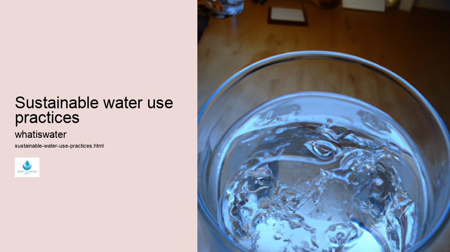
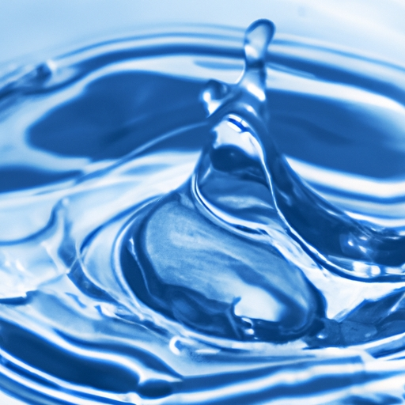

Hydrological Cycle
Hydrological Cycle
Evaporation and transpiration
Condensation and cloud formation
Precipitation and rain patterns
Surface runoff and river systems
Groundwater flow and aquifers
Snowmelt and glacial processes
Water storage in oceans lakes and reservoirs
Soil moisture and infiltration
Water balance and budgeting
Human impact on the hydrological cycle
Marine Ecosystems
Marine Ecosystems
Coral reefs and their biodiversity
Mangrove forests as coastal protectors
Ocean currents and climate regulation
Deepsea habitats and extremophiles
Intertidal zones and estuarine ecosystems
Marine food webs and trophic levels
Freshwater Ecosystems
Freshwater Ecosystems
Conservation efforts for marine species
Marine biogeochemical cycles
Impact of global warming on oceans
Water Resource Management
Water Resource Management
Rivers streams and creeks ecosystems
Lakes ponds wetlands habitats
Biodiversity in freshwater environments
Aquatic plants role in oxygenation
Freshwater fish species diversity
Invasive species impact on freshwater systems
Pollution threats to freshwater sources
Conservation strategies for freshwater biomes
Role of wetlands in flood control
Importance of riparian buffers
Cultural Significance of Water
Cultural Significance of Water
Sustainable water use practices
Desalination technologies for fresh water supply
Wastewater treatment processes
Rainwater harvesting techniques
Management of water during drought conditions
Transboundary water resource politics
Infrastructure for water distribution
Agricultural irrigation efficiency
Urban water demand management
Impact of climate change on water resources
About Us
Contact Us

Sustainable water use practices
Droughts
Sustainable water use practices are essential for ensuring the long-term availability and quality of water resources. As populations grow, climates change, and economies expand, the pressure on freshwater systems intensifies.
Sustainable water use practices - Water Cycle
Rain Gardens
Drinking Water
Water Cycle
Water Education
This essay delves into various methods and techniques that can be implemented to promote sustainable consumption and management of our precious water resources.
Firstly, conservation is a cornerstone of sustainable water usage. By installing efficient fixtures such as low-flow toilets and showerheads, households and businesses can significantly reduce their consumption.
Sustainable water use practices - Water Education
Water Cycle
Water Education
H2O
Wastewater Treatment
Hydroelectric Power
Rain Gardens
Additionally, fixing leaks promptly is critical; even a small drip can waste gallons over time. Agriculture, which accounts for a substantial portion of global water use, can adopt smarter irrigation tactics like drip or sprinkler systems to minimize wastage.
Secondly, protecting natural ecosystems plays a pivotal role in maintaining the integrity of the water cycle.
Sustainable water use practices - Rain Gardens
H2O
Wastewater Treatment
Hydroelectric Power
Wetlands, forests, and riparian zones act as natural filters and reservoirs.
Water Footprint
Preserving these areas not only safeguards biodiversity but also enhances groundwater recharge and mitigates flood risks.
Thirdly, recycling wastewater presents an opportunity to alleviate stress on freshwater supplies.
Water Cycle
Desalination
Treated greywater from sinks, showers, and laundries can be reused for landscaping or industrial processes. Advanced treatment technologies make it possible to recycle even sewage effluent to potable standards – though this concept may require public education campaigns to gain wider acceptance.
Fourthly, rainwater harvesting offers another avenue for augmenting water supplies while reducing runoff pollution. Catchment systems collect precipitation from rooftops or other surfaces for storage in tanks; this conserved resource can then be used for non-potable purposes or even treated for drinking.
Sustainable water use practices - H2O
Water Footprint
Desalination
Water Conflict
Rain Gardens
Drinking Water
Fifthly, integrated water resource management (IWRM) provides a framework that encompasses all users – including ecological requirements – within a watershed context.
H2O
IWRM emphasizes cross-sectoral coordination and stakeholder participation to achieve equitable distribution without compromising environmental sustainability.
Lastly, education about water conservation must permeate all levels of society – from school curricula instilling values in young minds to continuous adult education programs highlighting best practices at home or work.
In conclusion, sustainable water use practices require concerted efforts across multiple fronts: efficiency upgrades in homes and industries; ecosystem protection; wastewater recycling innovations; rainwater harvesting initiatives; comprehensive planning through IWRM; and ongoing educational outreach. Each action contributes toward safeguarding our finite water resources against the backdrop of increasing demand from human activities amidst climate variability challenges.

Hydrological Cycle
Desalination technologies for fresh water supply
Check our other pages :
Deepsea habitats and extremophiles
Cultural Significance of Water
Sustainable water use practices
Soil moisture and infiltration
Frequently Asked Questions
What are sustainable water use practices?
Sustainable water use practices refer to strategies and actions aimed at using water in a way that meets current demands without compromising the ability of future generations to meet their needs. This includes methods like reducing consumption, protecting natural water sources from pollution, utilizing water-efficient technologies, reusing and recycling water where possible, and managing water resources in an equitable and environmentally sound manner.
Why is it important to implement sustainable water use practices?
Implementing sustainable water use practices is crucial due to the finite nature of freshwater resources, increasing population pressures, climate change impacts, and the need for equitable access to clean water. These practices help ensure long-term availability of this vital resource, prevent environmental degradation, support biodiversity, reduce greenhouse gas emissions associated with excessive water usage and treatment processes, and promote social and economic stability.